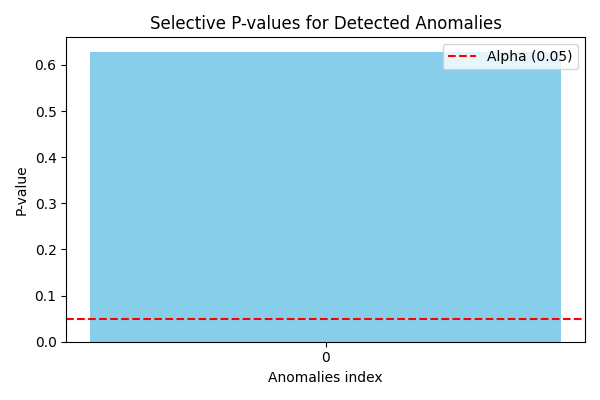

Note
Go to the end to download the full example code.
Post-Anomaly Detection Inference for Deep SVDD (Image Data)
This example shows how to perform selective inference for Deep Support Vector Data Description (Deep SVDD) on image patches using a Convolutional Neural Network (CNN) encoder and the pythonsi library. The method computes statistically valid p-values to control the False Positive Rate (FPR) in a post-hoc manner. The implementation is based on the work by Thanh et al. (2026) [1].
[1] Thanh, C. L. C., Vinh, D. Q., & Duy, V. N. L. (2026). Post-Anomaly Detection Inference for Deep SVDD. arXiv preprint arXiv:2609.37935.
import sys
import os
from pathlib import Path
# Add pythonsi to module search path
# REPO = Path(__file__).resolve().parent
# while REPO.name and not (REPO / "pythonsi").exists():
# REPO = REPO.parent
# sys.path.insert(0, str(REPO))
import numpy as np
import torch
import matplotlib.pyplot as plt
from pythonsi import Data, Pipeline
from pythonsi.anomaly_detection import DeepSVDDAD
from pythonsi.test_statistics import DeepSVDDTestStatistic
# Add cnn directory to path to import network
# sys.path.insert(0, str(Path(__file__).resolve().parent / "deepsvdd" / "cnn"))
from models.deepsvdd.cnn.network import PatchNetwork
Configuration
SEED = 0
PATCH_SZ = 15
IMG_SIZE = (300, 300)
ALPHA = 0.05
N_REFS = 50 # number of reference (normal) patches
PIXEL_VAR = 1.0
DEVICE = "cuda" if torch.cuda.is_available() else "cpu"
torch.manual_seed(SEED)
np.random.seed(SEED)
Load Trained Model
# script_dir = Path(__file__).resolve().parent
ckpt_path = "./models/deepsvdd/cnn/weights/patch_network.pth"
ckpt = torch.load(ckpt_path, map_location=DEVICE, weights_only=False)
cfg = ckpt["config"]
model = PatchNetwork(
in_channels=cfg["in_channels"],
img_size=cfg["img_size"],
repdim=cfg["repdim"],
channels=cfg["channels"],
).to(DEVICE)
model.load_state_dict(ckpt["model_state_dict"])
model.eval()
# Force model to float64 for precise selective inference calculation
model = model.double()
center_c = ckpt["center_c"].astype(np.float64)
R_squared = ckpt["R_squared"] * 0.6 # Shrink radius by 20% to easily trigger anomaly
Generate Test & Reference Data
def generate_normal_images(n_samples, img_size, channels=1):
h, w = img_size
imgs = np.random.normal(loc=0.0, scale=PIXEL_VAR, size=(n_samples, channels, h, w))
return torch.from_numpy(imgs.astype(np.float32))
def generate_anomaly_images(n_samples, img_size, delta, channels=1):
h, w = img_size
imgs = np.random.normal(
loc=0.0 + delta, scale=PIXEL_VAR, size=(n_samples, channels, h, w)
)
return torch.from_numpy(imgs.astype(np.float32))
def extract_patches(img_tensor, patch_size, stride):
if img_tensor.dim() == 3:
img_tensor = img_tensor.unsqueeze(0)
patches = img_tensor.unfold(2, patch_size, stride).unfold(3, patch_size, stride)
B, C, n_h, n_w, pH, pW = patches.shape
return patches.contiguous().view(B * n_h * n_w, C, pH, pW)
# Reference patches (from normal images)
ref_images = generate_normal_images(1, IMG_SIZE)
ref_patches = extract_patches(ref_images, PATCH_SZ, PATCH_SZ)
ref_idx = np.random.choice(len(ref_patches), N_REFS, replace=False)
ref_patches = ref_patches[ref_idx]
print(f"Reference patches: {ref_patches.shape}")
# Test patch (anomalous)
test_img = generate_anomaly_images(1, IMG_SIZE, delta=0)
test_patches = extract_patches(test_img, PATCH_SZ, PATCH_SZ)
test_patch = test_patches[0:1]
print(f"Test patch: {test_patch.shape}")
d = PATCH_SZ * PATCH_SZ
img_shape = (1, PATCH_SZ, PATCH_SZ)
Reference patches: torch.Size([50, 1, 15, 15])
Test patch: torch.Size([1, 1, 15, 15])
Check Anomaly
c_tensor = torch.tensor(center_c, device=DEVICE, dtype=torch.float64)
with torch.no_grad():
feat = model(test_patch.to(DEVICE).double())
score = torch.sum((feat - c_tensor) ** 2).item()
print(f"Score: {score:.10f}")
print(f"R²: {R_squared:.10f}")
print(f"Anomaly detected: {score > R_squared}")
if score <= R_squared:
print("\n⚠️ Test patch NOT detected as anomaly — try increasing delta.")
Score: 0.0081811020
R²: 0.0041076397
Anomaly detected: True
Build Pipeline & Compute Selective p-value
# Flatten patches for Pipeline (d-dimensional vectors)
X_test_np = test_patch.reshape(1, -1).numpy().astype(np.float64)
X_refs_np = ref_patches.reshape(N_REFS, -1).numpy().astype(np.float64)
# Covariance matrix
sigma = PIXEL_VAR * np.eye(d)
test_node = Data()
refs_node = Data()
detector = DeepSVDDAD(
model=model,
R_squared=R_squared,
center=center_c,
img_shape=img_shape,
device="cpu", # SI inference runs on CPU
network_type="cnn",
)
anomaly_node = detector.run(test_node)
pipeline = Pipeline(
inputs=(test_node, refs_node),
output=anomaly_node,
test_statistic=DeepSVDDTestStatistic(test_node, refs_node),
)
print("Running selective inference …")
anomalies, p_values = pipeline(
inputs=[X_test_np, X_refs_np],
covariances=[sigma],
verbose=False,
)
print(f"\nDetected anomalies: {anomalies}")
print(f"Selective p-values: {p_values}")
if len(p_values) > 0 and p_values[0] is not None:
print(f"Reject H₀ at α={ALPHA}? {'YES' if p_values[0] < ALPHA else 'NO'}")
Running selective inference …
Detected anomalies: [0]
Selective p-values: [0.6284283601687561]
Reject H₀ at α=0.05? NO
Plot the p-values
plt.figure(figsize=(6, 4))
plt.bar([str(anomaly) for anomaly in anomalies], p_values, color='skyblue')
plt.axhline(y=ALPHA, color='red', linestyle='--', label=f'Alpha ({ALPHA})')
plt.xlabel("Anomalies index")
plt.ylabel("P-value")
plt.title("Selective P-values for Detected Anomalies")
plt.legend()
plt.tight_layout()
plt.show()
